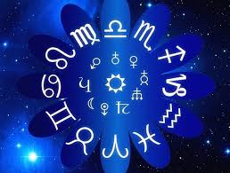

A horoszkóp (görögül: horoscopos, „óranézés”) az asztrológia hiedelemrendszere szerint a Nap, a Hold, a Naprendszer bolygói és a 12 állatövi jegy helyzete egy adott pillanatban, általában egy személy születése idején, vagy életének fontos fordulópontján feltüntető ábra az esemény idejére és földrajzi helyére felállítva. Segítségével az „asztrológus” következtetéseket von le az adott ember sorsáról, jelleméről, betegségi hajlamairól stb. A horoszkóp az asztrológus szerint az általa megállapított szimbolikus üzenetet hordoz. Nem okozója, csak mutatója az eseményeknek.[1] Több fajtája van, például radixhoroszkóp (az egyén életének „térképe”), szolár- és lunárhoroszkóp (éves, illetve havi előrejelzés), vagy a kérdőhoroszkóp, melyből egy adott kérdésre keresnek választ.
|  | |||
| Kosárlabda< | Hortobágyi palacsinta< | Kedvenc színem< | Horoszkóp |